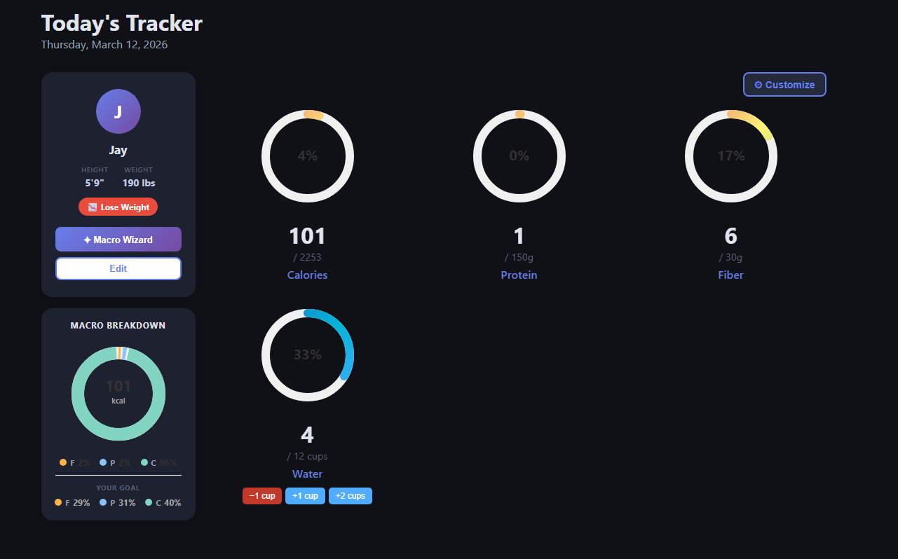
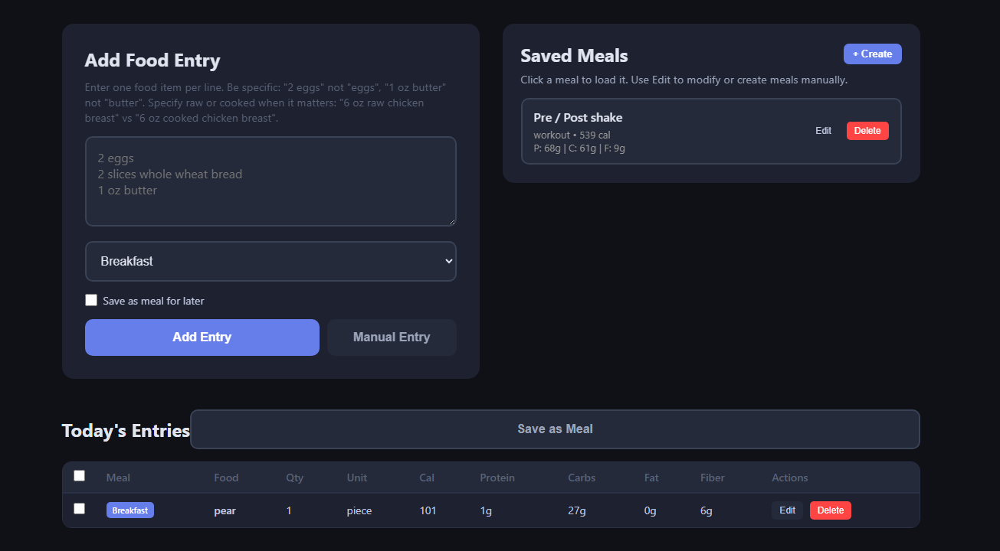
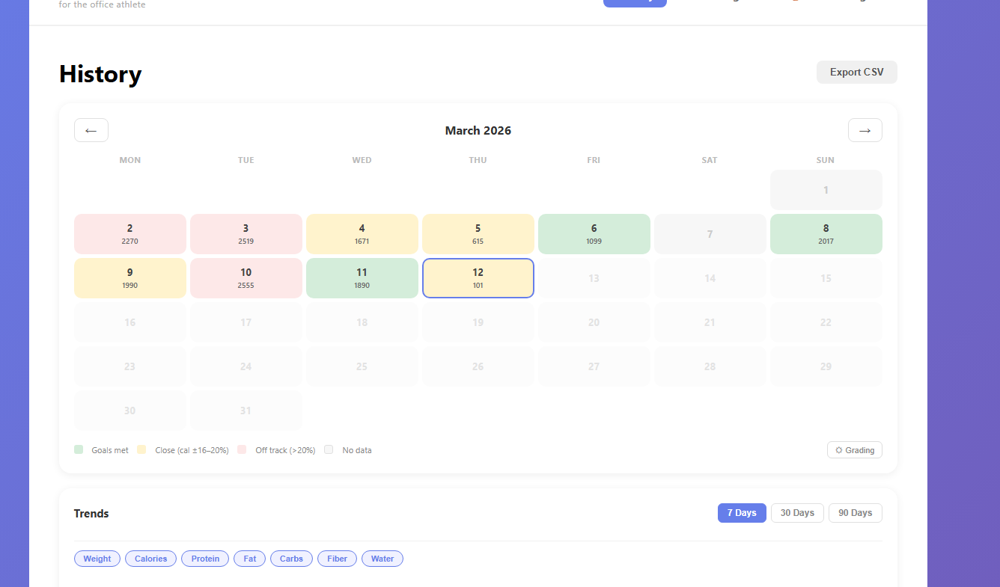
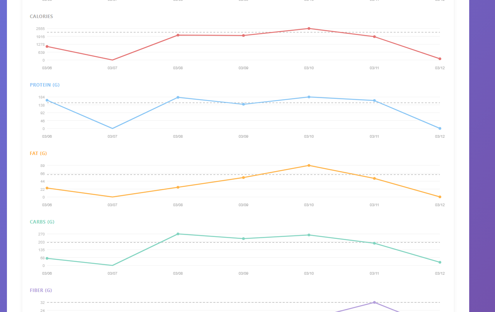
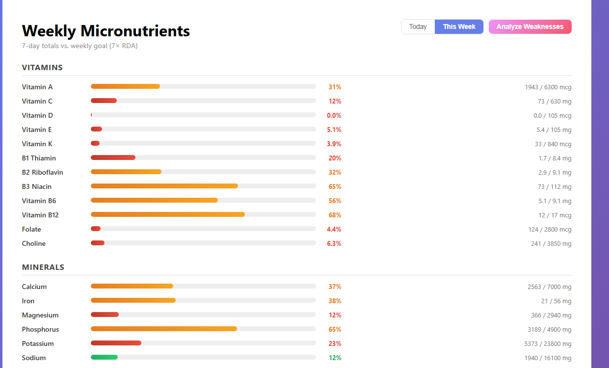

Nutrition apps are either overkill or too simple. I wanted something in between — a tracker that shows me exactly what I need, lets me log food fast, and gives me a clear picture of whether I'm actually hitting my goals. So I built one.
The app is aimed at the "office athlete" — someone who cares about their health and trains regularly, but doesn't have time to spend 20 minutes logging a meal. The whole thing is built around speed of entry and clarity of feedback.
The Dashboard
The main screen shows everything that matters at a glance: calories, protein, fiber, and water — each as a circular progress ring with a percentage filled and your current intake versus your daily goal.
{kind=link}

The main dashboard — profile card on the left, macro rings on the right, water tracking at the bottom.
On the left is a profile card showing your name, height, weight, and goal (in my case, lose weight). There's also a Macro Wizard button that calculates your targets automatically based on your stats, and a Macro Breakdown donut chart that updates in real time as you log food throughout the day, showing the ratio of fat, protein, and carbs in what you've actually eaten — compared to your goal split.
Water tracking lives at the bottom with quick-add buttons (-1 cup, +1 cup, +2 cups) so you never have to open a separate screen just to log a glass of water.
Logging Food
The food entry screen is where most of the time is saved. Instead of searching a database item by item, you type out your meal in natural language — one item per line. The app sends that to an AI that parses and returns the macros for each line.
{kind=link}

Food entry screen — natural language input on the left, saved meals on the right, and today's log below.
You assign a meal category (Breakfast, Lunch, Dinner, etc.) and optionally check "Save as meal for later" to build up a library of your go-to meals. The Saved Meals panel on the right lets you click any saved meal to load it directly — so your pre/post workout shake goes in with one click instead of re-entering it every time.
Below the input is Today's Entries — a table showing every food logged so far with full macro columns: calories, protein, carbs, fat, and fiber. Each row has Edit and Delete buttons for quick corrections.
History & Trends
Knowing today's numbers is useful, but seeing patterns over time is what actually drives behavior change. The History page gives you two views: a calendar and a trends chart.
{kind=link}

History page — color-coded calendar showing daily calorie performance, with export and trend controls below.
The calendar colors each day based on how close you were to your calorie goal: green means goals met, yellow means within 16–20%, and red means off track by more than 20%. White days have no data. At a glance you can see which days were solid and which went sideways. There's also an Export CSV button to pull your full history into a spreadsheet.
{kind=link}

Trends section — individual line charts per macro over 7 days, each with a dashed goal reference line.
The Trends section renders individual line charts for each macro — calories, protein, fat, carbs, and fiber — over 7, 30, or 90 days. Each chart has a dashed horizontal line showing your target for that metric, so you can see at a glance whether you're consistently over or under. The week shown here (03/06–03/12) makes it obvious that 03/07 was a low day across the board, while 03/10 was a high day for fat intake.
Micronutrients
Most trackers stop at calories and macros. This one goes further with a dedicated micronutrients page that shows your weekly intake of vitamins and minerals against your 7-day RDA targets.
{kind=link}

Weekly Micronutrients — color-coded progress bars for every tracked vitamin and mineral, with an Analyze Weaknesses shortcut.
Every nutrient gets a horizontal progress bar that fills from red through orange to green as you approach the goal. The page breaks down into two groups — Vitamins (A, C, D, E, K, and the full B complex through B12, plus folate and choline) and Minerals (calcium, iron, magnesium, phosphorus, potassium, sodium, and more). Each row shows the exact current value alongside your weekly target, so you know precisely how far off you are, not just a vague percentage.
You can toggle between Today and This Week, and there's an Analyze Weaknesses button that surfaces which nutrients are consistently falling short — useful for figuring out whether a deficiency is a one-off or a pattern.
Dark Mode & Light Mode
The app ships with both a dark and a light theme. The dashboard, food entry, trends, and history pages all run in dark mode by default — dark backgrounds, muted card surfaces, and colored accents that pop without eye strain in a dim room or at a desk late in the day. The micronutrients page shown above is the same app in light mode — clean white surfaces, gray progress tracks, and the same color-coded bars. Both themes are fully styled; nothing is just an inverted color dump. You switch between them with a single toggle and the preference is saved.
Tech Stack
The stack is intentionally simple — no heavy framework, no complex build pipeline:
- Flask (Python) — backend routing, session management, and API endpoints
- SQLite — all user data, food logs, and saved meals stored locally
- Claude API — natural language food parsing, returns structured macro data per item
- Chart.js — trend line charts rendered client-side
- Vanilla JS + HTML/CSS — no frontend framework, keeps it fast and easy to maintain
The AI food parsing is the core feature that makes fast entry possible. You type something like "2 eggs, 2 slices whole wheat bread, 1 oz butter" and get back accurate macros for each item without touching a search box. The prompt asks for specificity — raw vs cooked, weight vs volume — so the numbers stay accurate.
What I'd Improve
There are a few things on the list for the next pass:
- Weight tracking — the trends page already has a Weight filter button, it just needs the data behind it
- Mobile layout — the dashboard is usable on mobile but the tables get cramped on small screens
- Weekly summary emails — a Sunday digest showing your week at a glance would be a useful nudge
- Barcode scanning — for packaged foods, typing is slower than scanning
For now the core loop works well: log fast, see where you stand, check the week. If you're tracking macros and tired of apps that make it harder than it needs to be, this is the approach I'd recommend building toward.